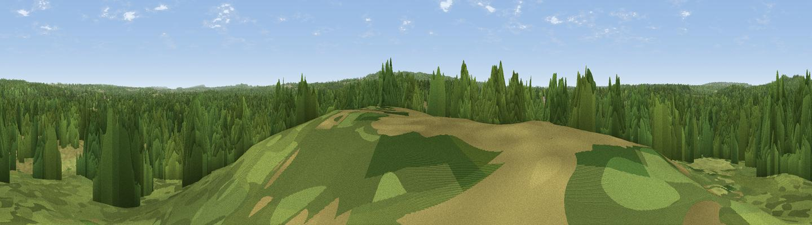

Yagden Hill
#40984 in England · top 66% of its area beats it · near TilfordWhere it is
The exact computed spot (SU 88625 42425). Click the marker for map links.
The view, rendered

A 360° render of this exact spot computed from the terrain model, tree cover and land cover — summer colours, afternoon light, calibrated against photographs of famous viewpoints. Real trees, hedges and buildings will differ in detail.
The panorama
Grey silhouette: terrain skyline in each direction (720 bearings, Earth curvature and refraction included). Dashed green: skyline with trees (+15 m) and buildings (+8 m) as obstacles. Blue strip: how far the ground is visible on each bearing.
Where the view opens
Wedge length = distance to the farthest visible ground on that bearing (vegetation-aware). Rings at 10, 25 and 50 km.
What fills the view
56% woodland · 42% grassland ·
Angular shares of the visible panorama (visual magnitude), not map area. Landscape diversity 0.33 (0–1 Shannon).
Key numbers
More beautiful places nearby
The staircase of upgrades: each row has a higher view potential than everything closer. Driving times are estimates from straight-line distance, calibrated against real road routing — check an actual route before setting out.
| Place | Direction | Drive | Score |
|---|---|---|---|
| Viewpoint near Runfold | N · 3 km | ~8 min | 47.8 |
| Viewpoint near Runfold | NNW · 4 km | ~9 min | 56.3 |
| Viewpoint near Hindhead | S · 5 km | ~12 min | 60.4 |
| Viewpoint near Puttenham | NNE · 7 km | ~14 min | 62.0 |
| Gibbet Hill | S · 7 km | ~14 min | 64.9 |
| Temple of the Four Winds | SSE · 7 km | ~14 min | 66.6 |
| Viewpoint near Hascombe | ESE · 12 km | ~22 min | 70.1 |
| Viewpoint near Fernhurst | SSE · 14 km | ~25 min | 75.1 |
51.17421, -0.73363 · source: osm peak · position refined by local search. Computed location — check access rights before visiting.